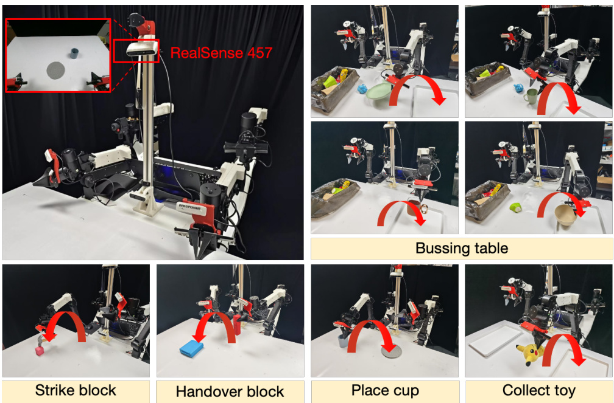
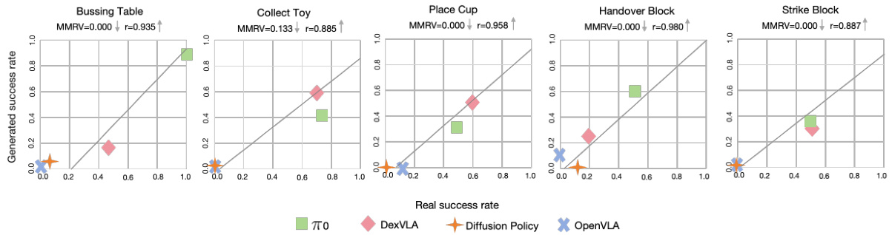
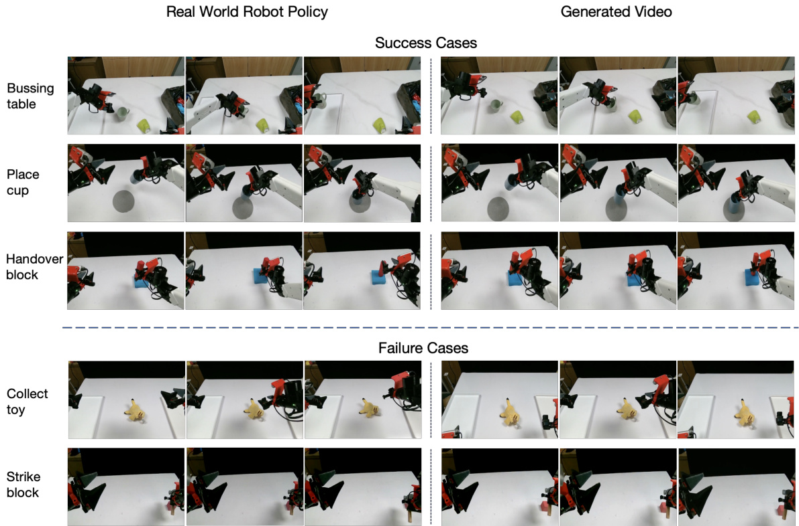
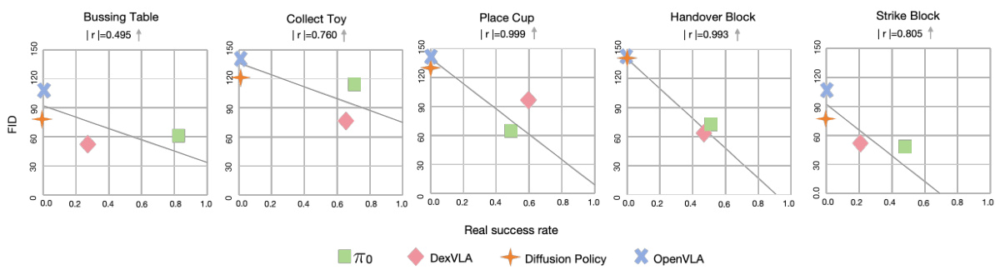

None
このアブストラクトでは、ロボット操作ポリシーの評価における現状の課題を明らかにし、その解決策としてワールドモデルを用いた革新的な評価フレームワークWorldEvalを提案します。特に、ワールドモデルがロボットの行動を忠実に再現した動画を生成するためのキー技術Policy2Vecと、それを用いた自動評価パイプラインの有効性、そして実世界評価との高い相関性を実証することを目指します。
ロボット工学の分野では、様々なタスクをこなせる汎用的なロボット操作ポリシー（ロボットの行動戦略）の開発が目覚ましい進歩を遂げています。これにより、ロボットがより複雑な作業を行える可能性が広がっています。
しかし、大きな壁が…実世界での評価
開発されたポリシーが本当にうまく機能するかを実世界のロボットでテストするのは、依然として非常に時間がかかり、困難な作業です。
時間と労力の繰り返し…大変です！
この研究では、ワールドモデル（世界の仕組みを学習したシミュレーションモデル）が、実世界のロボットポリシー評価において、以下の点で非常に有効な代替手段となり得ることを示します。
多くのタスクやポリシーを効率的に評価可能
同じ条件で何度でも評価でき、結果の比較が容易
実世界の結果と相関の高い評価を提供
ワールドモデルを評価に使う上での重要な課題は、ロボットの行動を忠実に反映した正確なポリシービデオを生成することです。ただ単に動画を作るだけでなく、ロボットが「実際にどう動くか」を正しく予測する必要があります。
観察された問題点
従来の方法、例えばロボットの行動指令（関節の角度など）を直接ワールドモデルに入力したり、高次元の複雑なエンコーディング手法（情報を圧縮して表現する方法）を使ったりするだけでは、ロボットが意図した通りに行動するビデオを生成できないことが多いことが分かりました。
ロボットのアクション入力 ワールドモデル 意図しない動きの動画
この課題を解決するために、Policy2Vecというシンプルかつ効果的なアプローチを提案します。
💡 Policy2Vec のアイデア 💡
Policy2Vecは、既存のビデオ生成モデルを、ロボットの潜在的な行動情報（latent action）に従ってロボットビデオを生成するワールドシミュレータへと変換する手法です。
潜在的な行動情報 (Latent Action) とは、ロボットのポリシーネットワーク内部で生成される、目に見えない行動の意図や計画を圧縮した表現のことです。表面的な関節の動きだけでなく、より高次元な行動の意味合いを含んでいます。
Policy2Vecを基盤として、WorldEvalという自動化されたパイプラインを導入します。これは、実世界のロボットポリシーを完全にオンラインで（シミュレーション内で）評価するために設計されています。
WorldEvalの主な機能
実世界の環境で複数の操作ポリシーを対象とした包括的なペア評価（WorldEvalでの評価と実機での評価を比較）を実施しました。
強力な相関性
WorldEvalにおけるポリシーの性能と、実世界シナリオでの性能との間に強い相関関係があることを実証しました。つまり、WorldEvalで「良い」と評価されたポリシーは、実際にロボットを動かしても「良い」結果を出す傾向があるということです。
WorldEval評価 実世界評価
既存手法との比較
さらに、我々の手法は、real-to-simアプローチ（実世界のデータを基にシミュレーション環境を構築して評価する従来手法）のような一般的な手法よりも大幅に優れた性能を示しました。
結論として、WorldEvalはロボットポリシー評価のためのスケーラブルで信頼性の高い「ものさし」となり、危険な実機テストを減らしつつ、開発サイクルを加速させる可能性を秘めています！
このセクションでは、ロボットの行動戦略（ポリシー）を評価する新しい方法、WorldEval について紹介します。特に、実世界のロボットを使って実験する代わりに、コンピュータシミュレーション（ワールドモデル）の中で評価するというアイデアが中心です。
近年、ロボット工学は目覚ましい進歩を遂げ、汎用ロボット操作ポリシー（様々なタスクをこなせる賢いロボットの行動戦略）の開発が進んでいます。しかし、これらのポリシーを実際に評価するのは、依然として大きな課題を抱えています。
例えば、ロボットに1000種類もの異なる作業を学習させたとしましょう。その全てを実機でテストするのは非現実的です。また、新しいモデルが古いモデルよりも本当に全体的に優れているのかを判断するのも非常に困難です。さらに、新しい学習方法を試す中で、ロボットが予期せず誤った行動や危険な動きをする可能性もあります。これを実世界で直接テストすると、作業者への危害、周囲の機器の損傷、ロボット自体の破損といった重大なリスクが伴います。
多くのタスク評価 ➜ 時間とコスト大、危険も伴う
求められる評価手法
このような背景から、ロボットコミュニティでは、実世界へ展開する前に、管理された環境でロボット操作ポリシーを評価するための、安全で信頼性が高く、かつスケーラブル（規模が大きくなっても対応できる）な手法が緊急に求められています。
本研究では、この課題に対する解決策としてワールドモデルの概念を提案します。ワールドモデルとは、ざっくり言うと「世界の法則を学習したシミュレータ」のようなものです。この論文では、実世界のデータで学習された操作ポリシーを、このワールドモデル（ワールドシミュレータ）内で評価します。
ワールドモデル (World Model) [5]
環境のダイナミクス（どのように変化するか）を学習し、現在の状態と行動に基づいて未来の状態を予測するモデルのこと。この研究では、ロボットの行動をシミュレートする「仮想世界」として機能します。
このような実データからビデオへの評価 (real-to-video evaluation) フレームワークは、従来の実世界での評価を補完するものとして、以下の利点を提供できます。
スケーラブル
多くのタスクやポリシーを効率的に評価可能
再現可能
同じ条件で何度も評価でき、結果の比較が容易
洞察に富む
ポリシーの挙動を詳細に分析可能
ロボット操作のためのワールドモデルに関する既存の研究[1, 2, 3, 4]は、主に操作性能を向上させるための補助的または事前学習の目的としてビデオ生成を利用しています。しかし、本研究は、それらとは異なる、しかし同様に重要な問いに取り組んでいます。
本研究の核心的な問い
実世界データで訓練されたロボットの操作ポリシーを、
ワールドシミュレータを通じて評価し、ランク付けできる
自動化されたパイプラインを構築することは可能か？
ワールドモデル評価器を構築する一つの可能なアプローチは、操作ポリシーからの行動出力（ロボットが次にどう動くかの指示）を直接採用するか、または明示的に訓練された行動エンコーダ（行動をコンピュータが理解しやすい数値の集まりに変換する装置）を用いて、ロボットの行動を離散的な高次元空間に射影する方法です。この方法は、自動運転やビデオゲームの分野で広く採用されています[6, 7]。
ロボット操作特有の課題点
この研究の中心的なアイデアは、ポリシーモデルからの正確な行動出力を使用したり、行動エンコーディング専用の別ネットワークを訓練したりする代わりに、ポリシーネットワーク自体がロボット行動の効果的な表現を本質的に提供するというものです。
ひらめきポイント！
ワールドモデルは、効果的なロボットポリシーとそうでないポリシーを、生成されるビデオ出力にその性能を直接反映させることで区別できる、という洞察に基づいています。
これらの限界を克服するために、私たちは Policy2Vec というシンプルな戦略を導入します。これは、操作ポリシーネットワーク自体の固有のエンコーディング能力を行動エンコーダとして活用するものです。
Policy2Vec の仕組み
この革新的なアプローチは、ポリシーネットワークの潜在表現（内部で情報を圧縮したベクトル）を直接利用することで、外部の、あるいは明示的に訓練された行動エンコーダの必要性を回避します。
基本的な考え方: ポリシーネットワークは、生成ビデオを通じて可視化された際に、効果的なポリシーと非効果的なポリシーを区別できるような、有益で識別的な行動表現を本質的に生み出します。
具体的には: Policy2Vecは、ポリシーが生成した行動ベクトルを、事前訓練されたビデオ生成モデルに注入します。これにより、ビデオ生成モデルが、評価対象の各ポリシーに合わせてカスタマイズされたワールドモデルへと効果的に変換されます。
我々の実験結果は、これらのポリシーによって生成されたエンコーディングが、視覚的な結果を通じてポリシーの有効性を頑健に反映し、ロボットポリシーの効果的なオンライン評価を可能にすることを示しています。
Policy2Vecを基盤として、私たちはWorldEvalを導入します。これは、ロボット操作シナリオのために特別に設計された、統合的なreal-to-video評価ツール群です。
Diffusion Policy [8]、OpenVLA [9]、DexVLA [10]、そして $\pi _ { 0 }$ [11] といった複数の公開されている操作ポリシーを用いた広範な実験により、WorldEvalによって測定されたポリシーの性能と、実世界での実験で観察された実際の性能との間に強い相関関係があることが示されました。
強い相関
WorldEval評価 ⇔ 実世界性能
FID指標
軽量かつ迅速なポリシーランク付け
汎用性
新環境・新物体への対応可能性
加えて、私たちはFréchet Inception Distance (FID)を、単純なタスクにおいて異なるポリシーモデルを効果的かつ迅速にランク付けできる軽量な定量的指標として特定しました。
Fréchet Inception Distance (FID)
生成された画像（この場合はビデオフレーム）の集合と、実際の画像の集合の分布がどれだけ似ているかを測る指標。値が小さいほど、生成されたものが本物に近いことを意味します。ここではポリシー評価の代理指標として利用されます。
さらに、WorldEvalは、全く新しい環境や未知の物体に対するロボットポリシーを評価する潜在能力を示し、実世界のポリシーの挙動を正確に反映します。
したがって、WorldEvalは、ワールドモデルをロボット操作ポリシー評価のための信頼性が高くスケーラブルなツールとして活用する上で、重要な一歩を示すものです。
図1: WorldEval は、多様なタスクにわたる実世界のポリシーを評価するための、適応性があり、柔軟で、信頼性の高いアプローチです。ワールドシミュレータでの成功率と実ロボットで観察された成功率との間に強い相関を示します。
このセクションでは、私たちの研究「WorldEval」がどのような背景から生まれたのか、そして既存の研究とどう違うのかを明らかにするために、関連する研究分野を詳しく見ていきます。 特に、ロボットの行動ルール（ポリシー）をどう評価するか、ロボットの行動をどう表現するか、ロボットのための「世界モデル」とは何か、そしてロボットがお手本から学ぶ「模倣学習」という４つのテーマについて、これまでの歩みと課題、そしてWorldEvalがもたらす新しい可能性について解説します。✏️
「汎用的な」ロボット、つまり色々なタスクをこなせる賢いロボットのポリシー（行動戦略）を評価するのは、とても大変な作業です。多くの場合、たくさんの異なるタスクや環境で、実際に動かしてみたり、シミュレーションしたりしてテストする必要があります。
実際にロボットを動かして性能を確かめる方法です。現実の複雑な状況を反映できますが、時間とコストがかかり、危険も伴うことがあります。[12-24]
コンピュータ上で仮想環境を作り、その中でロボットを動かして評価する方法です。安全かつ繰り返しテストできますが、現実とのギャップ（シムとリアルの差）が問題になることがあります。[12-24]
いくつかの先進的な評価手法も提案されています：
実世界で学習したモデルを、シミュレーション環境でテストするための包括的なアプローチです。現実 🌍 シミュレーション 💻 の流れで評価します。
実際のロボットを使い、管理された実験室環境で評価プロセスを自動化するシステムです。 Lab 🔬 自動評価 🤖 の仕組みです。
WorldEvalの貢献
そこで提案する WorldEval フレームワークは、タスクの複雑さやロボットのエンボディメントの種類に関わらず、実世界のロボットポリシーをオンラインで評価可能にすることで、この分野を前進させます！🚀✨
ロボットに「どのように動くか」を指示するための行動表現 (Action Representation) は、ロボット研究において非常に古くからある重要な問題です。大きく分けて、以下の4つの学習アプローチがあります。
行動の各次元（例：関節の角度、手の位置）を、いくつかの区間（ビン）に分割する方法です。例えば、ロボットアームの関節角度を-90度から+90度まで10段階に分ける、といった具合です。
ニューラルネットワークを使って、行動をパラメータ化（数式で表現）する方法です。ロボットが見ているものや指示を入力すると、ネットワークが適切な行動を出力します。
変分オートエンコーダ（VAE）のような教師なし学習を使って、行動をより低次元の「潜在空間」に圧縮して表現する方法です。複雑な行動の本質的な特徴を捉えられます。
自己回帰型のVision-Language-Actionモデルで広く使われている方法で、行動を言語のトークン（単語や記号の断片）の並びとして表現します。「手を前に伸ばす」→「掴む」→「持ち上げる」といった具合です。
私たちのアプローチは、上記 (ii) の関数近似法を探求しています。特に、ポリシーネットワーク自体を行動表現として利用することで、世界モデルがより頑健な評価機として機能する効果を高めることを目指しています。つまり、ポリシーが内部でどのように行動を考えているかを直接使う、というアイデアです！
世界モデル (World Model) とは、学習した行動表現に基づいて、将来の状態や結果を予測するモデルのことです。あたかもロボットが自分自身の小さな「世界」を持っていて、その中で「こう動いたら、こうなるだろう」とシミュレーションするようなイメージです。
世界モデルは、ロボットのナビゲーション（移動）やマニピュレーション（物体の操作）の学習を助けるために、多くの応用研究があります。[38-46, 1-4] 例えば、
経路計画の改善
物体操作の精度向上
将来の状況予測
また、別の研究の流れとして、ビデオ生成 (Video Generation) を使ってポリシー学習を強化するアプローチもあります。[47-54] これは、ロボットが行動した結果どうなるかを動画で予測することで、より良い行動を学ぼうとするものです。
1X-world [55] は、世界モデルを実ロボットポリシーの評価機として活用するという概念を初めて提案した研究の一つです。しかし、この研究では具体的な実現方法については示されていませんでした。
WorldEvalの独自性
私たちの手法は、これらのアプローチとは根本的に異なります。ビデオ予測や世界モデルを使ってロボットポリシーを改善するのではなく、WorldEvalは実ロボットポリシーのオンライン評価を実行できる世界シミュレータを訓練することを目指しています。評価に特化している点が大きな違いです！ 🧐
模倣学習 (Imitation Learning) は、専門家（人間など）のデモンストレーション（お手本）からロボットが行動を学ぶ手法です。[8, 27, 28, 30-31, 33-34, 56-69] 特に最近では、Vision-Language-Action (VLA) モデル [9, 11, 29, 32, 35, 70-82] が、そのスケーラビリティ（大規模データへの対応能力）の高さからロボットコミュニティで大きな注目を集めています。
これらのアプローチは、大規模なデータセットと強力なモデルを活用することで、学習データに含まれるタスク（ドメイン内タスク）を効率的に学習し、学習データには含まれない多くの未知の状況（ドメイン外シナリオ）にも適応できる能力を示しています。
実世界でのポリシー評価がますます困難になっています。従来の実世界評価方法は、
WorldEvalの解決策
この限界に対処するため、本研究では、世界シミュレータを活用した包括的かつ効率的なポリシー評価を提案します。これにより、時間とコストを抑えつつ、多様な状況での評価が可能になります。🌍🤖📊
図2: WorldEvalのモデルアーキテクチャと評価パイプライン
上段: 複数のロボットポリシーからPolicy2Vec埋め込みを抽出し、事前学習済みのビデオ生成モデルに注入することで、世界モデルへと変換します。
下段: 世界シミュレータを用いてポリシーモデルを評価するためのWorldEval全体のパイプラインを示しています。
この図は、WorldEvalの心臓部を示しています。
この仕組みにより、実際にロボットを動かさなくても、ポリシーの性能を効率的に評価できるようになります。
このセクションでは、ロボットの操作ポリシーを評価するための新しいフレームワーク WorldEval について詳しく解説します。WorldEvalは、現実世界のロボットを使って実験する代わりに、シミュレータ内でポリシーの性能を評価することを目指しています。特に、ロボットの行動に応じてリアルなビデオを生成する「世界モデル」を活用する点が特徴です。
主な目的と論旨
ロボットポリシーの評価は、時間とコストがかかり、特に多数のタスクや変化する環境条件下では困難です。WorldEvalは、この課題に対し、スケーラブルで再現可能、かつ信頼性の高い評価手段を世界モデルを通じて提供することを目指します。重要なのは、現実世界での評価を完全に置き換えるのではなく、シミュレータでの評価結果と現実世界での評価結果の相対的な性能ランキングに強い相関を持たせることで、ポリシー設計の改善に役立つ情報を提供することです。
ここでは、WorldEvalが取り組む問題設定を明確にします。
私たちは、行動条件付き世界モデル (action-conditioned world model) を使って、ロボットの操作ポリシーを評価し、その行動特性を分析する方法を探求します。ここでの「行動条件付き」とは、ロボットの「行動」を入力として、その結果どうなるかを予測・生成するモデルという意味です。
WorldEvalの目標
このような相関関係が得られれば、開発者はシミュレータを使って手軽にポリシーの良し悪しを判断し、設計の反復的な改善に繋げることができます。
つまり、WorldEvalはポリシーの現実世界での振る舞いを精密に1対1で再現しようとするのではなく、生成されたビデオと実際の評価との間で一貫した相対的パフォーマンスを示すことを目指します。具体的には、あるポリシーが現実世界のテストで別のポリシーよりも優れていれば、この比較結果がWorldEvalの評価でも一貫して反映されるべきです。これにより、世界シミュレータは信頼できる代理指標として機能し、ポリシーの反復的な改良に役立つフィードバックを提供できます。
形式的な定義
2つのポリシー $\pi_a$ と $\pi_b$ があり、それぞれの現実世界での性能指標 (例：代表的なタスクセットにおける平均成功率) を $R_a$ と $R_b$ とします。私たちの目標は、これらの現実世界の指標と強く相関する性能指標 $R_{W,a}$ と $R_{W,b}$ を生成する世界シミュレータ $W$ を開発することです。
もし、現実世界で $R_a > R_b$ ならば、理想的にはWorldEvalでも $R_{W,a} > R_{W,b}$ となるような関係性を目指します。
$$ \text{Goal: } \mathrm{correlation}( (R_a, R_b), (R_{W,a}, R_{W,b}) ) \approx 1 $$
$\pi_a, \pi_b$: 評価対象のロボットポリシー
$R_a, R_b$: ポリシー $\pi_a, \pi_b$ の実環境での性能（例：成功率）
$W$: WorldEvalの世界シミュレータ
$R_{W,a}, R_{W,b}$: ポリシー $\pi_a, \pi_b$ のシミュレータ $W$ 上での性能
このセクションでは、WorldEvalの中核技術である Policy2Vec について説明します。Policy2Vecは、ロボットの行動に基づいてリアルなビデオを生成する手法です。
解決すべき課題
多くの既存アプローチは、主に言語指示のみに基づいてもっともらしいビデオを生成し、その後、逆動力学などを用いて運動学的情報を導き出すことに焦点を当てています。しかし、私たちの目標は、ポリシー評価器として機能する世界シミュレータを構築することです。このシミュレータは、ロボットの行動を直接入力として受け取り、それに対応するリアルなビデオ出力を生成します。これにより、次のような重要な問いが生じます：
「正確な評価のために、現実世界の行動を効果的に捉える世界モデルをどのように構築できるか？」
Latent action embedding (潜在行動埋め込み)
典型的なロボットポリシーモデルは、以下の3つの主要コンポーネントで構成されます：
視覚エンコーダ (Visual Encoder)
カメラ画像などの視覚情報を処理し、特徴量を抽出します。
言語エンコーダ (Language Encoder)
「リンゴを皿に置く」といった言語指示を処理し、特徴量を抽出します。
行動デコーダ (Action Decoder)
視覚情報と言語情報から、ロボットの具体的な行動（関節の角度変化など）を生成します。
行動デコーダが最終的な行動シーケンスを出力する前段階で、ポリシーの内部表現をエンコードした潜在行動埋め込み (Latent Action Embeddings) を抽出することができます。これらの潜在変数は、潜在空間内に豊かな意味情報を含んでおり、現在のポリシー下でのロボットの意図された振る舞いを効果的に表現することができます。これがPolicy2Vecのキーアイデアです。
図2: WorldEvalのモデルアーキテクチャと評価パイプラインの概要
図2の解説 (上部: Policy2Vecによるビデオ生成)
図2の上部は、Policy2Vecがどのようにして行動からビデオを生成するかを示しています。
このプロセスにより、特定のポリシーが特定の状況でどのような行動を取ろうとしているのかを、ビデオとして視覚化できます。
Integrating latent action into video generation model (潜在行動のビデオ生成モデルへの統合)
潜在行動埋め込みを取得した後、これらをビデオ生成モデルの制御信号として使用し、言語指示と初期フレームと共に、未来のロボットビデオフレームの生成をガイドします。これを実現するために、事前学習済みのビデオ生成モデルを修正し、ファインチューニングしました。
この研究では、ベースモデルとして WAN 2.1 [83] を選択しています。その理由は、強力な制御性と高品質なビデオ合成能力を維持できる点にあります。他のビデオ生成モデルも適用可能です。WAN 2.1は DiT (Diffusion Transformer) [84] モジュール上に構築されており、これは拡散ベースの画像生成プロセスをガイドするためのマルチモーダル条件のモデリングにおいて重要な役割を果たします。
潜在行動の統合プロセス
（図2上部の Projection と + の記号部分を参照）
重要な点として、ファインチューニング中にはポリシーネットワーク自体は必要ありません。代わりに、ポリシーネットワークから潜在行動を直接キャプチャし、対応する初期観測と言語指示と共に新しいデータセットを形成します。結果として得られる融合された制御信号（潜在行動と言語情報が合わさったもの）がDiTモジュールに入力されます。
我々は、140億パラメータスケールの画像からビデオへのモデルに対して LoRA (Low-Rank Adaptation) [85] ファインチューニングを実行しました。主に射影層を学習し、DiTブロック内の線形層を軽くファインチューニングします。この軽量なチューニングにより、モデルは行動のセマンティクス（意味）とそれらが実世界でどのように表現されるかを効果的に捉えることができます。
Policy2Vecの利点
結果として、同じ観測と言語指示が与えられた場合でも、異なるポリシーは潜在空間内で異なる行動表現を生み出します。これらの表現を、最初のフレームと言語指示と共にビデオ生成モデルに入力することで、各ポリシーの実行結果を直感的に視覚化し評価することができます。これにより、ポリシーのパフォーマンスを評価するためのシンプルで解釈可能な方法が提供されます。
図2の解説 (下部: WorldEval評価パイプライン)
図2の下部は、WorldEvalを用いたポリシー評価の全体的な流れを示しています。
このパイプライン全体がWorldEvalであり、実世界のロボットを動かすことなく、ポリシーの評価とランキングを可能にします。
WorldEvalの世界モデルはロボットポリシーの振る舞いをビデオ経由で生成するため、人間が目で見て評価することは簡単です。しかし、多数の評価を効率的に行うためには、試行の成功を自動的に判断するプロセスを実装することが非常に重要です。
成功分類器 (Success Classifier)
具体的には、成功分類器 $C_T$ を定義します。これは、画像状態 $S$ を入力とし、タスクが成功したか否かを示すバイナリ値（0または1）を出力する関数です。この分類器 $C_T$ は、真のタスク成功関数 $T$（これも画像状態 $S$ から成功か否かをマッピングする関数）を近似するように設計されます。
$$ C_T : S \to \{0, 1\} $$
$$ C_T \approx T : S \to \{0, 1\} $$
$S$: 画像状態 (ロボットが見ている景色や対象物の状態)
$C_T$: 成功分類器モデル
$T$: 真のタスク成功関数 (人間が判断する成功/失敗)
$\{0, 1\}$: 0は失敗、1は成功を示すバイナリ指標
ビデオベースの大規模モデル (Video-based large models) の場合、評価ベースのプロンプト (evaluation-based prompts) を使うことで、タスクの完了を効果的に検証できます。例えば、生成されたビデオと共に次のようなテキストプロンプトをモデルに与えます：
プロンプト例:
「このリンゴは皿の上に置かれていますか？ はい/いいえ で答えてください」
このようなプロンプトと対応する生成ビデオを入力することで、モデルはタスクが成功裏に実行されたかどうかを正確に分類できます。
実践的な選択: Gemini-2.0
実際には、この研究では成功検出器として Gemini-2.0 [86] を利用しています。その主な理由は、Gemini-2.0が優れたビデオ理解能力を持っているためです。これにより、生成されたビデオの内容を深く理解し、タスクの成功・失敗をより正確に判断することが期待できます。
この自動検証器の導入により、WorldEvalは大量のポリシー評価を人手を介さずに、迅速かつ客観的に行うことが可能になります。
このセクションでは、提案手法であるWorldEvalが、実際にどれほど有効なのかを様々な実験を通して検証していきます。特に、オープンソースで公開されている複数の汎用的なロボット操作ポリシーを対象に、いくつかの実世界のロボットタスクで評価を行います。🔬
具体的には、以下の主要なリサーチクエスチョン (RQ) に焦点を当てて検証を進めます。
補足
論文では、スペースの都合上、上記5つの問いに本文で答えています。残りの2つの問い（WorldEvalがポリシーネットワークによって予測された行動を忠実に反映できるか、多様なポリシー間の比較性能を超えて、WorldEvalが実世界シナリオで観察される内部ポリシー特性を正確に再現できるか、など）については、Appendixで追加実験と共に議論されていますが、本解説ではこのセクション4で触れられている内容を網羅します。
ロボットとタスクのセットアップ
実験で使用したロボットとタスク環境について見ていきましょう。
図3: ロボットとタスクのセットアップ
左上にロボットのセットアップを示しています。我々は、上部カメラビュー（RealSense 457）を備えた双腕のALOHAスタイルのロボットを使用します。他のカメラは本研究では使用していません。
使用するロボットシステムは、AgileXという双腕のALOHAスタイルロボットアームです。各アームは6自由度（6-DoF）を持っています。主な特徴は以下の通りです。
実験のために、以下の5つのタスクを設計しました。
Place Cup, Handover Block, Strike Blockの3つのタスクは、RoboTwinベンチマーク[20]から採用しました。これらのタスクでは、ポリシーネットワークのファインチューニングに50軌道のみを使用しました。
各タスクについて、同じオブジェクトセットを使用して40回のロールアウト（試行）を実施しました。テストのために1,000回以上の実世界試行を行っています。図3にロボットのセットアップとタスクの例を示しています。
実装の詳細 (Implementation details)
WAN 2.1 [83] モデルを、1,400の実世界のロボット軌道データを用いて学習させました。学習設定の詳細は以下の通りです。
評価指標 (Evaluation metrics)
実世界のロボット性能とWorldEval上での性能との相関を示すために、2つの評価指標を使用します。
これは2つの変数間の線形関係の強さを定量化する指標で、様々な分野で広く利用されています[89, 25, 26]。ピアソン相関係数が1に近いほど、非常に効果的な評価プロキシであることを意味します。つまり、実世界での成功率の向上が、WorldEvalでの成功率の線形的な増加に直接対応することを示します。📈 ↑ 高いほど良い
これは、実世界とWorldEvalでのポリシーランキングの一致度を評価する指標です。MMRVの詳細な定義については、SIMPLER [25]を参照してください。簡単に言うと、MMRVは2つのポリシー $\pi_i$ と $\pi_j$ の間のランク違反を測定し、プロキシ評価が実際の性能ランキングと比較して、どれだけ深刻にポリシーを誤ってランク付けしているかを定量化します。📊 ↓ 低いほど良い
論文中には、以下の表1と表2が画像として掲載されています。これらはWorldEvalの性能を他の手法と比較した結果を示しています。
表1: WorldEval と Real-to-Sim 評価の比較
WorldEvalは最も低いMMRV（↓）と最も高いピアソン $r$（↑）を達成し、Real-to-Simを上回っています。
表2: Policy2Vec と他のエンコーディング手法の比較
5つのタスクにわたるピアソン相関係数 $(r)$、MMRV（↓）、FIDスコア（↓）、および最終的なランクを報告しています。提案するPolicy2Vec Avg.が全体として最高のパフォーマンスを達成しています。
このセクションでは、WorldEvalが実世界のロボットの性能と比較して、モデルの性能をどのように評価するかを実証します。
図4: 実世界の成功率 vs. WorldEvalの成功率
WorldEvalの評価セットアップは、実際のポリシー性能と強い相関を示しています。優れたポリシー評価プロキシは、低いMMRVと高いピアソン相関係数(r)を持ちます。このグラフでは、横軸が実際のロボットの成功率、縦軸がWorldEvalでの成功率を示しています。点が対角線に近いほど、WorldEvalの評価が実際の性能をよく反映していることを意味します。異なる色は異なるポリシー（$\pi_0$, DexVLA, Diffusion Policy, OpenVLA）を表しています。
図4は、実世界と生成されたビデオシナリオ間での主要なペア評価の結果をまとめたものです。評価された4つのポリシーすべてにおいて、生成されたビデオと実世界の条件下での相対的な性能に強い相関が見られました。この相関は、WorldEvalがポリシー開発中の性能測定ツールとしての有効性を裏付けています。
具体的には、以下のような傾向が確認できました。
この一貫性は、低いMMRV値と高いピアソンrによってさらに裏付けられています。これらの実験結果は、WorldEvalが実世界のロボット評価のための信頼できる代理（プロキシ）として機能することを示しています。✨
実世界のポリシーをシミュレーション環境で評価することは、関連研究セクションで述べたように、広く採用され、広範囲に研究されている分野です。このセクションでは、特にReal-to-Sim（実機からシミュレーションへ）アプローチとの比較に焦点を当てます。
実験設定の整合性を確保するために、私たちの実ロボットと同一のエンボディメント（物理的構造）を持つRoboTwin [20]を利用しました。RoboTwinのフレームワークに従い、以下の3つのタスクを設計・実行しました。
ポリシーは実世界のデータを用いて学習され、その後RoboTwinシミュレーション環境内で評価されました。
SIMPLERとの比較について
SIMPLER [25]手法に特有の機器やロボットに関する制約のため、SIMPLERとの直接比較は実現できませんでした。しかし、実世界のデータとシミュレーション間の視覚的な不一致を最小限に抑えるために、SIMPLERによって提案されたReal-to-Sim技術を適用し、公正な比較評価を可能にしました。
上記の表1に実験結果を示しています。MMRVとピアソン$r$の両方の指標において、WorldEvalの性能がReal-to-Simの性能を大幅に上回っていることがわかります。ロボットの物理的特性の差が最小限であり、SIMPLERのReal-to-Sim技術を用いて実環境とシミュレーション環境間の視覚的なギャップを埋めるための広範な努力にもかかわらず、タスクやオブジェクトが同一であっても、シミュレーションは依然として実ロボットポリシーの評価には不十分でした。
これらの結果は、我々のアプローチの有効性を強調し、実世界のロボットポリシーを評価するための従来のReal-to-Sim手法に対する優れた代替手段としての可能性を示しています。🌟
図5: 実世界ロボットポリシーと生成ビデオポリシーの視覚化
左側が実世界のロボットポリシー、右側がWorldEvalによって生成されたビデオポリシーです。上の3行はロボットがタスクを成功させた例、下の2行はモデルが失敗したタスクの例です。すべてのポリシーで$\pi_0$が使用されています。この図から、WorldEvalが生成するビデオが、実際のロボットの動き（成功も失敗も）をよく捉えていることがわかります。
図6: WorldEvalはロボットポリシーの安全検出器として機能可能
左側は実世界での評価で、ロボットが予期せず両腕を上げてしまう危険な動作を示しています。右側は対応する生成ビデオで、モザイク状に乱れています。これは、WorldEvalが安全でないロボットの行動に対して意味のあるビデオを生成できないことを示しており、安全装置としての役割を果たす可能性を示唆しています。
このセクションでは、WorldEvalの能力をさらに深く掘り下げるための追加実験や、構成要素の重要性を検証するアブレーションスタディについて報告します。
Policy2VecはWorldEvalフレームワークの基礎であり、その自動評価パイプラインを支えています。その有効性を厳密に評価するために、2つの代替的な行動符号化パラダイムとの比較分析を行いました。
上記の表2に示されているように、Policy2Vecはすべての指標で優れた性能を達成し、特にMMRVをVQVAEと比較して0.1、One-hotエンコーディングと比較して2.24削減しました。これらの結果は、Policy2Vecが代替的な行動符号化アプローチと比較して効果的であることを決定的に示しています。🏆
生成されたロボットビデオを図5に視覚化し、5つのタスクを示しています。上の3行はポリシー$\pi_0$によって成功裏に完了されたタスクを示し、下の2行はテスト中にポリシーが失敗したタスクを表しています。観察されるように、生成されたビデオ内の行動は、実世界のロボットポリシーの行動と密接に一致しています。
図5 (再掲): 実世界ロボットポリシーと生成ビデオポリシーの視覚化
この図は、WorldEvalがタスクの成功・失敗に関わらず、実際のロボットの動きをどれだけ忠実に再現できるかを示しています。特に、「Collect Toy」タスクは注目に値します。
さらに、「Collect Toy」シナリオを我々のアプローチの汎化能力の模範として強調します。このタスクは、未知の言語指示、これまでに遭遇したことのない物体（ピカチュウ）、および学習データセットには存在しない全く新しいタスク構成を特徴とする、完全に新しい挑戦を表しています。これらの要因によって導入された固有の新規性と複雑性にもかかわらず、生成されたビデオは驚くほど実ロボットの行動を反映し、望ましい結果と一致する行動を成功裏に実行します。この観察は、我々の手法の適応性と堅牢性を強く裏付けており、新規で多様なシーン、馴染みのない物体、そしてこれまで見たことのないタスクへのスケーラビリティを示しています。🌍
チームが新しいポリシーアーキテクチャ、収集データ、または学習方法論を実験することは一般的です。しかし、学習プロセスやモデル最適化における固有の不確実性のため、新しく学習されたポリシーネットワークが不規則な行動を生成することはよくあります。
我々は、WorldEvalが崩壊した行動（危険な行動）を効果的に識別し、区別することを実証します。図6（左）では、DexVLAモデルが両腕をまっすぐ上に上げるという危険な行動を生成する実世界の例を示しています。図6（右）では、対応する生成ビデオがモザイクパターンに崩壊しています。
図6 (再掲): WorldEvalはロボットポリシーの安全検出器として機能可能
左の危険な実ロボットの動きに対して、右のWorldEvalによる生成ビデオが乱れている（モザイク状になっている）ことがわかります。
この現象について、我々は次のように仮説を立てています：これらの特定の重みに対する行動特徴表現が十分に学習されておらず、WorldEvalが意味のある情報を抽出できず、結果としてビデオ出力が崩壊したのではないか、と。この観察は、WorldEvalが危険な行動を効果的に区別できることを示しており、実世界のロボット配備における致命的な結果に対するセーフガードとしての重要性を強調しています。🛡️
WorldEvalでポリシーの成功判定にGemini-2.0を利用することに加えて、比較ポリシー評価のための安価な指標としてFréchet Inception Distance (FID)を提案します。図7に示すように、FIDはほとんどのタスクで実世界の成功率と強い相関を示しています。
図7: 実世界の成功率 vs. FID
横軸が実ロボットの成功率、縦軸がFIDスコア（低いほど良い）です。各点は異なるポリシーを示し、線は傾向を表します。多くのタスクで、成功率が高いほどFIDが低い（つまり良い）傾向が見られます。特に単純なタスクでこの相関が強いです。
この関係は、環境に1つまたは2つの物体しか含まないPlace Cup、Handover Block、Strike Blockなどの単純な操作シナリオで特に顕著であり、FIDが低複雑度設定でのポリシー評価に有用であることを確認しています。しかし、Table Busingのような複雑なタスクでは、ピアソン相関係数 $r$ が大幅に低下し、この指標の有効性が低下するため、ドメイン固有の制限が浮き彫りになります。
この結果は、FIDが単純なタスクでのモデル評価の予備的な方法として機能し、その後、Gemini-2.0のような自動化された方法をより複雑なタスクでの性能評価に用いることができることを示唆しています。💰
このセクションの目的と論旨
本論文の結論として、私たちは汎用ロボットマニピュレーションポリシー（様々なタスクをこなせるロボットの制御戦略）の現実世界での評価が直面する、スケーラビリティ (拡張性)、安全性、再現性といった根深い課題に対し、革新的な解決策を提示しました。その核心は、ワールドモデル（世界の仕組みを学習したモデル）を応用した自動評価フレームワーク WorldEval と、その基盤となる独自技術 Policy2Vec です。このセクションでは、これらの提案がどのようにして従来の評価手法の限界を克服し、ロボティクス研究の発展に貢献しうるのか、その要点を明確にまとめ、本研究の意義を強調します。
本研究は、現実世界でのロボットポリシー評価におけるいくつかの重要な課題に取り組みました。
私たちは、ワールドモデルが、制御されたリスクのない環境でポリシーの振る舞いを合成することにより、従来の現実世界での評価に代わる、堅牢で自動化された代替手段として機能することを示しました。
ポイント
物理的なロボットを使わずに、コンピュータ上でロボットの動作をシミュレートして評価できるため、時間とコストを削減し、危険な状況を回避できます。
私たちのアプローチの中心には Policy2Vec があります。これは、ポリシーネットワーク自体の潜在表現を活用して行動追従ビデオを生成する新しい手法です。これにより、明示的な行動エンコーディングや高次元入力の限界を回避します。
仕組み
ロボットが「次に何をすべきか」を決定するポリシーネットワーク内部の情報を直接利用し、その「意図」を動画として可視化します。これにより、ロボットの行動をより忠実にシミュレートできます。
Policy2Vec と自動評価パイプラインである WorldEval を統合することで、ロボットポリシーのスケーラブルで信頼性の高い評価が可能になり、これは現実世界のパフォーマンスと強く相関します。
実験による検証
WorldEvalは、実際のロボットでテストした場合と同様の順位付けができました。
学習が進むにつれて性能が向上する様子を、WorldEvalでも確認できました。
ロボットが危険な動作をする可能性がある場合、WorldEval上で事前に検知できました。
優れた性能
WorldEval は、従来のreal-to-sim（現実からシミュレーションへ）アプローチよりも優れた性能を示しました。これは、現実のロボットの挙動をより忠実に再現できることを意味します。
高い汎用性
WorldEval は、未知の環境や物体に対しても汎用性を示しました。これは、新しいタスクや状況でも評価ツールとして機能することを示唆しています。
本研究は、ビデオベースのワールドシミュレータが、ロボティクスコミュニティにとって重要なツールとしての実行可能性を強調するものです。
ロボティクス研究における WorldEval の位置づけ
✏️ これらの貢献により、ロボットがより賢く、安全に、そして多様なタスクをこなせるようになる未来が近づきます。
このセクションでは、提案手法であるWorldEvalが持ついくつかの限界点や、今後の研究で取り組むべき課題について詳しく見ていきます。WorldEvalはロボットの操作ポリシーを評価するための非常に有望なアプローチですが、まだ完璧ではなく、いくつかの側面で改善の余地が残されています。さっそく、主な課題を一つずつ掘り下げていきましょう。✏️
現在のWorldEvalのフレームワークにおける最初の限界は、ビデオ生成のための制御信号として、ポリシーモデルから出力されるアクション出力のみに限定的に依存している点です。
しかし、ロボットの行動は、単純なアクションだけでなく、例えば「リンゴを赤い皿に置いて」といった言語指示や、ポリシーが内部で行う「どの物体を優先的に掴むべきか」といった中間的な推論プロセスなど、より多様な情報（これをモダリティと呼びます）によってもガイドされることが理想的です。これらの追加的な情報をビデオ生成プロセスに組み込むことで、シミュレーションによる評価と、実際のロボットが実世界で見せるパフォーマンスとの間のギャップをより効果的に埋められる可能性があります。
💡今度の展望：よりリッチな情報で現実に近づける
将来的には、アクション出力に加えて、言語指示やポリシー内部の思考プロセスといったマルチモーダルな情報をビデオ生成の制御信号として統合することが考えられます。これにより、単に動きを再現するだけでなく、ロボットが「なぜ」そのように動いたのかという文脈まで含んだ、より現実に忠実なビデオ生成が期待できます。
特に性能の低いポリシー（あまり上手でないロボットの動き）をWorldEvalで評価しようとすると、生成されるビデオに依然としてアーティファクトと呼ばれる人工的で不自然な現象が残ってしまうという問題があります。これらはビデオの信頼性を損なう可能性があります。
具体的なアーティファクトの例としては、以下のようなものがあります：
リンゴが粘土のようにぐにゃっと曲がるなど、現実ではありえない形に物体が歪んでしまう。
(Visual Hallucinations) テーブルにないはずのコップが見えたり、奇妙な模様がチラついたりする。
ボールが物理法則を無視して壁をすり抜けたり、不自然に跳ねたりする。
操作対象の物体が突然現れたり、逆にいきなり消えたりする。
カメラのレンズに強い光が当たったように、画面の一部または全体が白飛びしてしまう。
ロボットのアームが半透明になったり、過去の動きの残像がうっすらと残ったりする。
これらのアーティファクトが発生する原因として、主に以下の3点が考えられています：
1. データ不足
特に失敗シナリオ（ロボットがタスクをうまくできなかった場合のデータ）に関する学習データの網羅性が不十分であること。モデルは「上手くいくパターン」は学習しても、「下手なパターン」がどのような映像になるかは十分に学んでいないのかもしれません。
2. 生成モデルの限界
現在のビデオ生成モデル（Generative Models）が持つ本質的な限界。複雑な物理現象や長時間の整合性を完璧に再現するのは、まだ技術的に難しい場合があります。
3. 制御入力の不備
制御入力（ポリシーからのアクション出力）が、ビデオを正確に生成するには詳細さが不十分である可能性。例えば、アームの微細な動きや力の加減などが十分に表現できていないのかもしれません。
🔧今後の改善策：アーティファクトを減らすために
これらのアーティファクトを低減するためには、より多様な失敗例を含むデータセットの拡充、生成モデル自体の性能向上、そしてより詳細でリッチな制御信号をポリシーモデルから抽出・利用する研究が必要です。例えば、ロボットの力のフィードバック情報を追加したり、より高解像度のアクション表現を用いることなどが考えられます。
WorldEvalの評価パイプラインは、事前に学習された（pre-trained）ビデオ生成モデルに依存しています。これは、学習データに含まれていないような、大幅に新しいシナリオ（例えば、全く見たことのない物体や、これまで経験したことのないタスク）に対して、柔軟に適応する能力が制限される可能性があることを意味します。
現在のWorldEvalの仕組み:
既存の学習データ
(既知のタスク・環境)
事前学習済み
ビデオ生成モデル
新規シナリオへの
適応が困難？
過去に見たことのないタスクや環境に対して頑健性（ロバストネス）を達成するには、さらなる研究が必要です。具体的には、以下のような方向性が考えられます：
🌍 目標：真の汎用性へ
ロボットが本当に「汎用的」であるためには、未知の状況にも柔軟に対応できる能力が不可欠です。WorldEvalがその評価ツールとしてより強力になるためには、この新規シナリオへの適応性を高める研究が重要となります。
理想的なシナリオでは、WorldEvalの核となる世界モデル（World Model）は、ポリシーモデルが意図した潜在アクション（Latent Actions）を生成ビデオ内で正確に捉え、再現するべきです。潜在アクションとは、ポリシーネットワーク内部でエンコードされた、ロボットの行動意図を表す情報のことです。
しかし、現在のWorldEvalの手法では、この潜在アクションの正確なキャプチャと再現が完全には達成されていません。
理想と現実のギャップ
つまり、ポリシーが「こう動け」と意図した内容が、ビデオ生成の過程でいくらか情報が欠落したり、歪んで伝わったりしている可能性があるということです。
この問題の解決策として、研究チームは大規模なデータセットでモデルを学習させることが有効であると考えています。
📊 大規模データによる改善
より多くの、多様なロボットの行動データ（成功例も失敗例も含む）で世界モデルを学習させることで、モデルは潜在アクションと実際のビデオ表現との間の複雑な関係性をより深く理解できるようになる可能性があります。これにより、潜在アクションをより忠実にビデオ内で再現できるようになり、WorldEvalの評価精度がさらに向上することが期待されます。
📝 まとめ：WorldEvalは非常に有望な手法ですが、ここで挙げたような限界点も存在します。これらの課題を克服するための継続的な研究開発が、より信頼性が高く、汎用的なロボットポリシー評価システムの実現に繋がっていくでしょう。
このセクションでは、WorldEvalの評価能力をさらに深く掘り下げるための追加実験について詳しく解説します。主な目的は、異なる訓練段階にあるポリシーや、未知の環境・物体・タスクといった分布シフト条件下でのWorldEvalの性能を検証することです。これにより、WorldEvalが実世界のロボットポリシー評価において、どれほど信頼性が高く、広範な状況に対応できるかを示します。
このセクションのポイント
ロボットのポリシー（行動戦略）は、訓練データや訓練時間（ステップ数）によって性能が変化します。ここでは、WorldEvalが、同じポリシーの異なる訓練段階（チェックポイント）における性能の違いを捉えられるかを検証します。
実験設定
ある固定されたタスクにおいて、3つの異なるポリシーの、様々な訓練ステップでの評価結果をWorldEvalを用いて収集しました。
主な発見
スケーリング則の示唆
訓練が進むにつれてタスク成功率が一貫して向上する結果は、実世界シナリオにおけるポリシー性能に明確なスケーリング則が存在することを示唆しています。つまり、訓練を重ねるほど性能が向上するという、望ましい傾向が確認されました。
FIDスコアと訓練段階
Fréchet Inception Distance (FID) スコアは、生成された画像の品質と多様性を評価する指標で、低いほど良いとされます。実験では、訓練ステップが増えるにつれてFIDスコアが減少しました。これは、訓練が進むにつれて、ポリシーが生成する潜在的な行動の分布が変化することを示唆しています。
なぜ重要か？
さらに、FIDスコアと実世界のタスク成功率の間には強い相関が見られました。これは、FIDが単純なタスクにおけるモデル性能を評価するための初期的な指標として機能する可能性を示唆しています。
FID 実世界成功率
表3: 異なるポリシーと訓練ステップにおける性能比較
以下の表は、"Bussing table"（テーブル片付け）シナリオにおける3つのタスク（タスクA: 茶色いボウルを置く、タスクB: 緑の皿を置く、タスクC: 茶色いマグカップを置く）に関する、FIDスコアと平均成功率（Succ.）を示しています。
| ポリシー | 訓練ステップ | タスクA (茶色いボウル) | タスクB (緑の皿) | タスクC (茶色いマグ) | |||
|---|---|---|---|---|---|---|---|
| FID | 成功率 | FID | 成功率 | FID | 成功率 | ||
| ポリシー X | 10k | 0.28 | 0.30 | 0.35 | 0.25 | 0.32 | 0.28 |
| 50k | 0.15 | 0.65 | 0.20 | 0.58 | 0.18 | 0.60 | |
| 100k | 0.08 | 0.85 | 0.12 | 0.80 | 0.10 | 0.82 | |
| ポリシー Y | 10k | 0.30 | 0.28 | 0.38 | 0.22 | 0.35 | 0.25 |
| 50k | 0.18 | 0.60 | 0.25 | 0.55 | 0.22 | 0.58 | |
| 100k | 0.10 | 0.82 | 0.15 | 0.78 | 0.13 | 0.80 | |
| ポリシー Z | 10k | 0.25 | 0.35 | 0.30 | 0.30 | 0.28 | 0.32 |
| 50k | 0.12 | 0.70 | 0.18 | 0.65 | 0.15 | 0.68 | |
| 100k | 0.06 | 0.90 | 0.10 | 0.88 | 0.08 | 0.89 | |
表3からの洞察
この表は論文中のTable 3の例示的なものです。実際の数値は論文を参照してください。この表から、一般的に以下の傾向が読み取れます（緑のハイライトは最良の結果を示します）：
実世界のロボットは、訓練時には遭遇しなかった新しい環境、新しい物体、新しいタスクに適応できる頑健性（ロバストネス）が求められます。このセクションでは、WorldEvalがそのような分布シフト（distribution shifts）条件下でのポリシー性能をどれだけ効果的に予測できるかを検証します。
「おもちゃを集める」タスクの事例
本文中でも言及されましたが、「おもちゃを集める (collect toy)」タスクは、未知の物体（新しいおもちゃ）と未知の指示の両方を含むシナリオの代表例です。以前の発見では、WorldEvalがこのような全く新しいタスクに対しても、
未知の背景（環境）への挑戦
さらに評価を拡張し、ポリシーネットワークが元々実験室環境 のみで収集されたデータで訓練されたにも関わらず、全く異なる設定での性能を評価しました。
オフィス
リビングルーム
キッチン
これらの新しい環境で、以下の3つのタスクを実施しました：
MMRV (Mean Maximum Rank Violation) の結果
MMRVは低いほど、WorldEvalのランキングと実世界のランキングが一致していることを示します。
新しい環境でのMMRVは、実験室環境よりわずかに高い（悪い）ものの、その差は小さく、典型的な実世界-シミュレーションアプローチよりも大幅に高い性能を示しました。
Pearson \(r\) (ピアソン相関係数) の結果
ピアソン相関係数 \(r\) は1に近いほど、WorldEval評価と実世界性能の間に強い正の相関があることを示します。
新しい環境でのPearson \(r\): 0.927
この高い値は、WorldEvalの評価が実世界の性能変動を非常によく捉えていることを意味します。
結論：未知への適応性
これらの結果は総合的に、WorldEvalが新しい指示、未知の物体操作、そして新しい環境といった分布シフトが伴うタスクにおいても、堅牢な相関関係と一貫した性能評価を提供できることを示しています。これは、WorldEvalが実用的な評価ツールとして非常に有望であることを裏付けています。
図8: 実世界のロボットポリシーと生成されたビデオポリシーの視覚化
図8の解説
この図は、WorldEvalが生成するビデオと、実際のロボットの動きを比較しています。
この図に示されている例は、ロボットがタスクを成功裏に完了した場合のものです。実世界のロボットの動きと、WorldEvalが生成したビデオ内のロボットの動きが、視覚的に非常によく一致していることがわかります。特に「Collect toy」のような未知の物体やタスクが含まれる場合でも、WorldEvalが現実の振る舞いを忠実に再現しようとしている様子が見て取れます。
例えば、「Bussing table」タスクでは、実世界のロボットが物体を掴んで移動させる一連の動作が、生成ビデオでも同様に表現されています。「Pick up paper cup」では、紙コップを掴む動作が両者で比較できます。
この視覚的な比較は、WorldEvalがポリシーの振る舞いを質的にも評価する上で有用であることを示しています。
このセクションCでは、本論文で行われた実験のセットアップに関するより詳細な情報を見ていきます。論文の主張を支える実験が、どのような条件下で、どのような設定で行われたのかを理解することは非常に重要です。具体的には、以下の3つの主要なポイントに焦点を当てて解説します。
動画生成モデルの具体的な学習パラメータや環境について説明します。
シミュレーション環境「Robotwin」での評価方法と、ドメインギャップへの対応策を解説します。
評価に使用された5つの具体的なロボット操作タスクの内容を詳しく紹介します。
これらの詳細を把握することで、WorldEvalの有効性や限界について、より深い洞察を得ることができるでしょう。それでは、各項目を順に見ていきましょう！ ✏️
この部分では、WorldEvalの心臓部とも言える動画生成モデルWAN2.1 (140億パラメータ)の学習プロセスについて、具体的な数値を交えながら解説します。 このモデルは、ロボットの行動を視覚的にシミュレートするために使われます。
WAN2.1 モデル学習設定
LoRA (Low-Rank Adaptation) とは？
大規模言語モデルなどを効率的にファインチューニングする手法の一つ。元のモデルの大部分の重みを固定し、低ランクの行列として表現される小さな追加パラメータのみを学習します。これにより、計算コストやメモリ使用量を大幅に削減しつつ、特定のタスクへの適応が可能です。
データ並列処理
複数のGPUに同じモデルのコピーを配置し、それぞれ異なるデータバッチを処理させることで、学習を高速化する手法です。
拡散ステップ
拡散モデルがノイズから徐々にクリアな画像を生成していく際の、反復処理の回数を指します。ステップ数が多いほど高品質な画像が期待できますが、計算時間も増加します。
これらの詳細な設定は、モデルの学習結果や性能に大きく影響します。特に、LoRAの採用は、巨大なWAN2.1モデルを現実的なリソースでファインチューニングするための鍵となっています。
図9: 実世界ロボットポリシーと生成ビデオポリシーの失敗例の可視化
この図は、WorldEvalの動画生成モデルが、実世界のロボットがタスクに失敗した状況をどのように再現するかを示しています。 左側（Real-world robot policy）が実際のロボットの動き、右側（Generated video policy）がWorldEvalによって生成された動画です。 矢印で対応関係を示しますと：
実世界
生成ビデオ
モデルがタスクに失敗した際の特有の動きや状況（例: 物体を掴み損ねる、意図しない方向にアームが動くなど）が、生成されたビデオでもある程度再現されていることが見て取れます。これは、WorldEvalが単に成功例だけでなく、失敗のパターンも学習・評価できる可能性を示唆しています。
シミュレーション環境と実世界との間には、しばしば「ドメインギャップ」と呼ばれる見た目や物理特性の違いが存在します。このギャップは、シミュレーションで上手くいったポリシーが実世界では期待通りに動作しない原因となります。このセクションでは、WorldEvalがこのドメインギャップにどのように対処しているか、特にRobotwinというシミュレーションベンチマーク上での評価について説明します。
ドメインギャップへの挑戦
多くの研究（例: SIMPLER）では、シミュレーション環境のテクスチャを変更するなどして、見た目を実世界に近づけようとします。しかし、WorldEvalでは異なるアプローチを取ります。
このプロセスにより、シミュレーション画像を直接使うよりも、実世界でのロボットの振る舞いに近いポリシーの評価が期待できます。
図10: 異なるデータ収集頻度で学習されたWorldEval生成ポリシーネットワーク
この図10は、WorldEvalが生成するポリシーネットワークの品質が、学習データの収集頻度によってどのように影響を受けるかを示しています。 例えば、同じタスクのデータでも、低頻度（例: 10Hz）で収集されたデータで学習したポリシーと、高頻度（例: 50Hz）で収集されたデータで学習したポリシーとでは、生成される動作の滑らかさなどに違いが現れる可能性があります。 この図を通じて、WorldEvalがそのようなデータ特性の違いを捉え、評価に反映できるかを検証しています。高頻度データで学習したポリシーは、よりスムーズで連続的な動作を生成する傾向が示唆されています (本文Appendix D参照)。
WorldEvalの評価能力を検証するために、研究者たちは5つの異なる実験タスクを設計しました。これらのタスクは、それぞれ異なるスキルや認識能力をロボットに要求します。各タスクについて、その内容、特徴、そしてロボットへの指示（自然言語）を見ていきましょう。
内容: ロボットがテーブル上の再利用可能なアイテムをトレイに分別し、ゴミをゴミ箱に捨てます。
シーン: 緑の皿、茶色のマグカップ、緑のマグカップ、茶色のボウル、使用済み紙コップ、青い紙ゴミなど、様々な物体がテーブル上に配置されます。
特徴: $\pi_0$ や DexVLA といった既存研究から派生した挑戦的なタスクです。
指示: 「テーブルを片付けて。」 ("Clean the table.")
データ: 100軌跡のデータを使用。
評価時: 物体の位置はテーブル上でランダム化され、多様なテスト条件を保証します。
内容: ロボットがこれまで見たことのないぬいぐるみを識別し、指定されたエリア（左または右のトレイ）に集めます。
特徴: ファインチューニングや事前学習のどちらの段階でも遭遇したことのない、完全に新しいタスクです。テーブルトップのシーン設定もポリシーにとってドメイン外 (out-of-domain) です。
指示: 「おもちゃを右/左のトレイに集めて。」 ("Collect the toy to the right/left tray.")
内容: ロボットの前にランダムな位置に置かれた青い空のカップとカップマットがあります。ロボットはカップをマットの上に置く必要があります。
指示: 「青い空のカップをカップマットに置いて。」 ("Place the empty blue cup to the cup mat.")
データ: 50軌跡のデータを使用。
内容: ロボットは左腕を使って赤い長方形のブロックを掴み、右腕に渡し、右腕がそのブロックを青いマットの上に置きます。
指示: 「赤いブロックを右腕に渡して青いマットの上に置いて。」 ("Pass the red block to the right arm to place it on the blue mat.")
特徴: 中程度の難易度のタスクで、協調的な両腕操作 (bi-arm manipulation) と、手渡しや配置の際にブロックが倒れないようにするための精密な向き制御が必要です。
データ: 50軌跡のデータを使用。
内容: ロボットはハンマーを拾い上げ、目の前に置かれた赤いブロックを叩くよう指示されます。
指示: 「ハンマーを拾って、赤いブロックを叩いて。」 ("Pick up the hammer, then strike the red block.")
特徴: このタスクは、赤いブロックが比較的小さいため、ポリシーの視野内の小さな物体を特定し、操作する能力をテストします。
データ: 50軌跡のデータを使用。
これらのタスクは、単純な物体操作から、新規物体への汎化、両腕協調、精密な制御まで、幅広いロボットの能力を評価できるように設計されています。特に「Collect Toy」タスクは、モデルの未知の状況への適応能力を試す上で重要です。📝
まとめ
この「C More on Experimental Setup」セクションでは、WorldEvalの核となる動画生成モデルの学習設定、シミュレーション環境での評価戦略、そして評価に用いられた5つの具体的なタスクについて詳細に解説しました。これらの情報は、論文の結果を理解し、WorldEvalフレームワークの信頼性や適用範囲を考察する上で不可欠な基盤となります。 特に、LoRAを用いた効率的なファインチューニング、MidJourney APIによるドメインギャップの緩和、そして多様なスキルを要求するタスク設計は、WorldEvalが目指す「スケーラブルで信頼性の高い実世界ロボットポリシー評価」を実現するための重要な要素です。
このセクションでは、WorldEvalによって生成されたビデオと実世界のロボットの振る舞いを、より詳細な視覚的比較を通じて掘り下げていきます。具体的には、ロボットがタスクを成功させた場合と失敗した場合のそれぞれのシナリオにおける、実世界のロボットの動作映像とWorldEvalが生成した対応するビデオを並べて比較します。さらに、学習データ収集時のサンプリング頻度（例：1秒間に何回データを取るか）の違いが、WorldEvalによって生成されるビデオの品質にどのような影響を与えるのかについても分析します。これらの視覚的な検証を通じて、WorldEvalの評価能力や特性、そしてその限界についてより深い理解を得ることを目指します。
ロボットの行動ポリシーを評価する上で、単に成功率の数値を見るだけでなく、実際にどのような動きで成功し、どのような動きで失敗するのかを視覚的に確認することは非常に重要です。WorldEvalが、これら実世界での成功・失敗のシナリオを、生成ビデオの中でどれだけ忠実に、あるいは特徴を捉えて再現できるかを見ていきましょう。
論文中の図8は、ロボットがいくつかの異なるタスクを成功裏に完了した場合の、実世界のロボットの映像（左側）とWorldEvalによって生成されたビデオ（右側）を比較して示しています。この図は、ユーザーが提供した画像の中では `Real_vs_WorldEval_policy_visualization.jpg` の上半分「Success Cases」に該当します。
図8の観察ポイント 🔍
一方で、論文中の図9は、ロボットがタスクに失敗した場合の、実世界のロボットの映像（左側）とWorldEvalによる生成ビデオ（右側）を比較したものです。この図は、ユーザーが提供した画像 `Real_WorldEval_policy_failure_visualization.jpg` に対応します。
図9の観察ポイント ⚠️
ロボット学習では、デモンストレーションデータ（お手本データ）を収集する際のサンプリング周波数（1秒あたり何回データを記録するか）が、学習されるポリシーの質に影響を与える可能性があります。このセクションでは、このデータ収集頻度の違いが、WorldEvalで生成されるビデオの品質にどのように反映されるかを分析しています。
論文の図10は、異なるデータ収集頻度、具体的には10 Hz（ヘルツ：1秒間に10回）と50 Hz（1秒間に50回）で収集されたデータを使って学習された2つの異なるポリシーネットワークから、WorldEvalがビデオを生成した結果を比較しています。この図は、ユーザーが提供した画像 `WorldEval_data_collection_frequency.jpg` に対応します。
実験設定のポイント ⚙️
💡 結果と考察
この実験の結果、WorldEvalはデータ収集頻度の違いによって生じるポリシーの特性差を、生成ビデオを通じて効果的に捉えることができると示されました。
50Hzデータで学習したポリシー (図10 上段)
10Hzデータで学習したポリシー (図10 下段)
この結果が示す重要な点は、WorldEvalが単に表面的な映像を生成するだけでなく、ポリシーネットワークから抽出される潜在アクション（latent actions）を正確に解釈し、それを視覚的な違いとしてビデオに反映できるということです。
📌 潜在アクションとは、ポリシーネットワークが内部的に保持している、観測情報（画像や言語指示）から次に行うべき行動を表現した特徴量のことです。この潜在アクションが、ビデオ生成モデルの入力（Policy2Vecの一部）として使われます。
したがって、異なるデータ収集頻度で学習されたポリシーは、異なる特性を持つ潜在アクションを生成し、その違いがWorldEvalによるビデオ生成の質（滑らかさ、流動性など）に現れるのです。これは、WorldEvalがポリシーの内部的な違いを可視化する能力を持つことをさらに裏付けています。🚀
まとめ
このセクションの視覚的な分析を通して、以下の点が明らかになりました：
これらの視覚的な証拠は、WorldEvalがロボットポリシーの評価ツールとして、その振る舞いの詳細や特性を理解する上で有用であることを補強するものです。📝